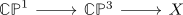

fibration sequence CP^1 to CP^3
Proposition
The homotopy fibration sequence

where $\mathbb{C}\mathbb{P}^1 \rightarrow \mathbb{C}\mathbb{P}^3$ is given as CW inclusion.
Then $X$ is homotopy equivalent to $S^4$
should be true:
- blackboxed:
- assumption that $H^*(X)$ is degreewise finitely generated
- $S^4$ actually fits into a sequence
Proof
Consider the singular cohomology ring of the complex projective space. Then using Leray-Hirsch for the empty fibration (note that the assumptions are fullfilled) we conclude that
Using the universal coefficient Theorem for cohomology (+ the assumption that the homology is finitely generated) we conclude that
see:
By the long exact sequence of a serre fibration and isomorphism of homotopy groups between skeleton and CW complex we conclude that
is an isomorphism for $i \in \{0,1,2\}$.
Hence $\pi_i(X) = 0$.
Furthermore using absolute Hurewicz theorem we conclude (iteratively) that $\pi_3(X) = 0, \pi_4(X) = \mathbb{Z}$
Then $S^4$ suffices by <sorry>
uniqueness
Note that